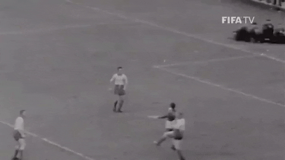

O Santos foi levado para a Nigéria a convite do governo local para jogar contra uma seleção da região do centro-oeste, onde está Benin City. O amistoso não fazia parte da programação inicial daquela excursão para a África, turnê que deveria ter se encerrado três dias antes com a última partida acontecendo na cidade de Lourenço Marques (hoje Maputo), em Moçambique.
No domingo (10), o Santos FC terá uma estreia mais do que especial na Vila Belmiro. O “Minuto 10”, em homenagem ao Rei Pelé. Aos 10 minutos de partida, este vídeo será reproduzido no telão, em homenagem ao nosso Rei. E assim será, durante todos os jogos do Peixe na Vila Belmiro.
Um jogador e sua incrível habilidade. Um rei e sua majestosa coroa. Uma camisa 10 e sua eterna magia. Como falar tudo isso e não pensar no maior atleta de todos os tempos? Para comemorar o aniversário de 79 anos de Pelé, o Santos FC irá prestar uma homenagem na camisa número 10, até o final da temporada. Em cima do escudo do Peixe estará uma coroa, para marcar a data tão importante para o mundo.
No dia 04 de novembro de 1959, o eterno Rei Pelé jogava pela primeira vez em sua monumental carreira no gol do Alvinegro. Foi na partida disputada diante o Comercial FC da capital, time hoje extinto, partida essa vencida pelo Peixe na Vila Belmiro, válida pelo Campeonato Paulista, pelo placar de 4 a 2 com gols de Pelé, Coutinho, Feijó e Dorval formando o onze praiano com: Lalá (Pelé); Getúlio e Mourão; Feijó, Formiga e Zito; Sormani, Jair Rosa Pinto, Coutinho, Pelé e Dorval. O técnico era Luiz Alonso Perez, o Lula. O Rei foi jogar no gol devido a uma contusão do goleiro Lalá e como naquele tempo não se permetia substituições durante o jogo, o Rei jogou na meta a partir dos 19 minutos do 2º tempo e não sofreu nenhum gol.
